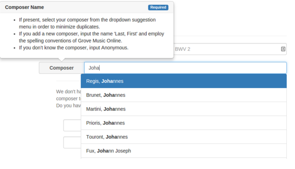
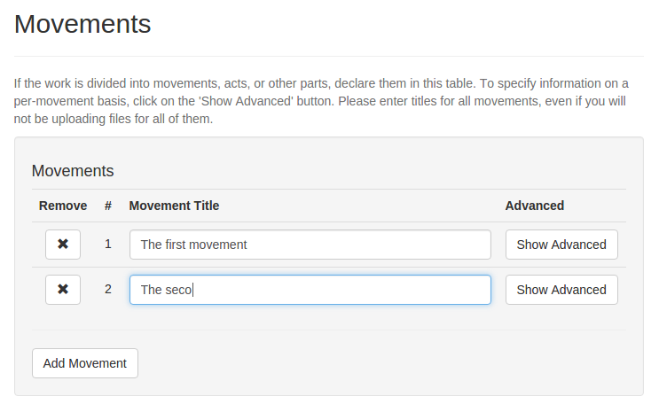
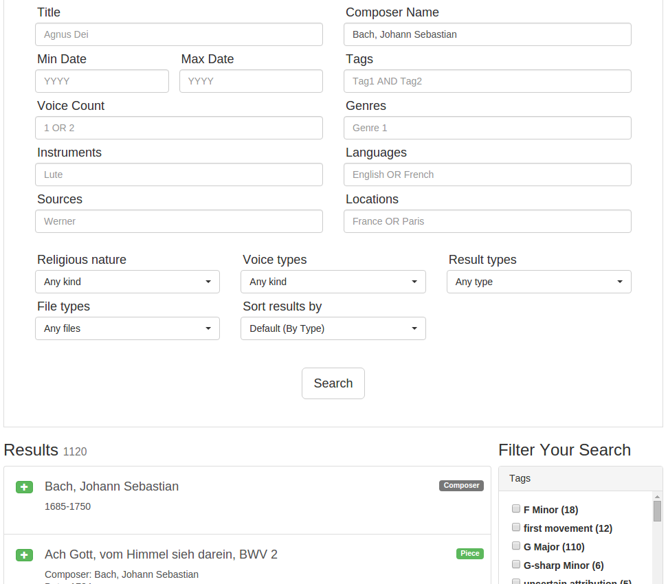

Elvis Database — better than ever.
Posted by ehopkins on September 30, 2015
A key part of the ELVIS Project is the ELVIS Database, a crowd-sourced resource of musical scores in symbolic notation (e.g. MEI, MusicXML). The usefulness of the database depends on contributions from all kinds of users, so developing a friendly, functional interface is key. Today’s post features one of our developers in the DDMAL lab discussing some of the big changes he worked on over the summer. Take a look at some of the improvements, and even try uploading a piece!
Guest post by Alex Parmentier
My name is Alex Parmentier. I’m an undergrad in Computer Science at McGill university, and over the last few months I’ve been making big improvements to the ELVIS Database which I’m eager to share.
The two major features I would like to focus on are the all-new upload and update interface and the improved searching interface.
When I began working on the database, there was no feature for users to upload new files. Implementing this feature was of critical importance, as the project relies on its users to populate the database with information. The implementation posed substantial challenges, since developers, musicologists, and other users had to work together to develop an interface which is easy to use and learn. The search interface also suffered from a lack of flexibility and poor usability because of constant page refreshes and resetting of fields.
Here are a few of the cool things that came out of this work.
Suggestions and pop-up rules on every upload field.

In order to make it easier for users to get a quick understanding of what the database already contains, and the rules for adding new things, I’ve added suggestions and pop-up rules to every field in the upload form. The suggestions are based of off live searches of the database, and the popup rules allow me to communicate the most important rules about the field in the context where they are important. Since there are dozens of rules for uploading pieces, putting them in context is extremely important!
Creating movements, uploading files — all on one page.

The upload form was designed to allow users to communicate the important information about a piece of music as intuitively as possible, following mental models of music instead of just the database’s internal structure. When uploading, the user can create as many movements as they want all on the same page, and can just as easily upload files to represent these movements. Developing this feature required close collaboration with testers in order to create an interface which was easy to use while supporting many use-cases.
Advanced search — as fast as you can type.

Our new advanced search allows simultaneous searching across over a dozen fields, and returns results nearly instantly on the same page. Users can quickly and easily narrow their search even further by selecting from a list of facets, allowing anyone to find exactly the items they’re looking for, and even be guided towards unexpected and interesting results.
I have also made the entire website more consistent and simple in design, improved our download system, added dynamic collection creation, and done many other overall performance and usability improvements. You can see the changes, as well as upload files, at http://database.elvisproject.ca/. Contact me at alexandre.parmentier@mail.mcgill.ca if you have questions or suggestions for the project!